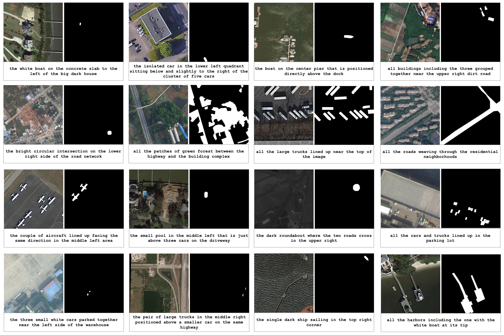

Generalized Referring Expression Segmentation on Aerial Photos
Aerial-D Dataset Statistics
Abstract
Referring expression segmentation is a fundamental task in computer vision that integrates natural language understanding with precise visual localization of target regions. Considering aerial imagery (e.g., modern aerial photos collected through drones, historical photos from aerial archives, high-resolution satellite imagery, etc.) presents unique challenges because spatial resolution varies widely across datasets, the use of color is not consistent, targets often shrink to only a few pixels, and scenes contain very high object densities and objects with partial occlusions. This work presents Aerial-D, a new large-scale referring expression segmentation dataset for aerial imagery, comprising 37,288 images with 1,522,523 referring expressions that cover 259,709 annotated targets, spanning across individual object instances, groups of instances, and semantic regions covering 21 distinct classes that range from vehicles and infrastructure to land coverage types. The dataset was constructed through a fully automatic pipeline that combines systematic rule-based expression generation with a Large Language Model (LLM) enhancement procedure that enriched both the linguistic variety and the focus on visual details within the referring expressions. Filters were additionally used to simulate historic imaging conditions for each scene. We adopted the RSRefSeg architecture, featuring a SigLIP2 vision--language encoder and a SAM segmentation decoder, and trained models on Aerial-D together with prior aerial datasets, yielding unified instance and semantic segmentation from text for both modern and historical images. Results show that the combined training achieves competitive performance on contemporary benchmarks, while maintaining strong accuracy under monochrome, sepia, and grainy degradations that appear in archival aerial photography.
Aerial-D Dataset Examples

Key Features
Acknowledgements
This dataset builds upon two foundational aerial imagery datasets:
Citation
If you use this dataset or code, please cite:
@article{marnoto2025aeriald,
title={Generalized Referring Expression Segmentation on Aerial Photos},
author={Marnoto, Luís and Bernardino, Alexandre and Martins, Bruno},
journal={IEEE Journal of Selected Topics in Applied Earth Observations and Remote Sensing},
year={2025},
note={Submitted}
}Contact:
Luís Marnoto: luis.marnoto.gaspar.lopes@tecnico.ulisboa.pt
Alexandre Bernardino: alexandre.bernardino@tecnico.ulisboa.pt
Bruno Martins: bruno.g.martins@tecnico.ulisboa.pt